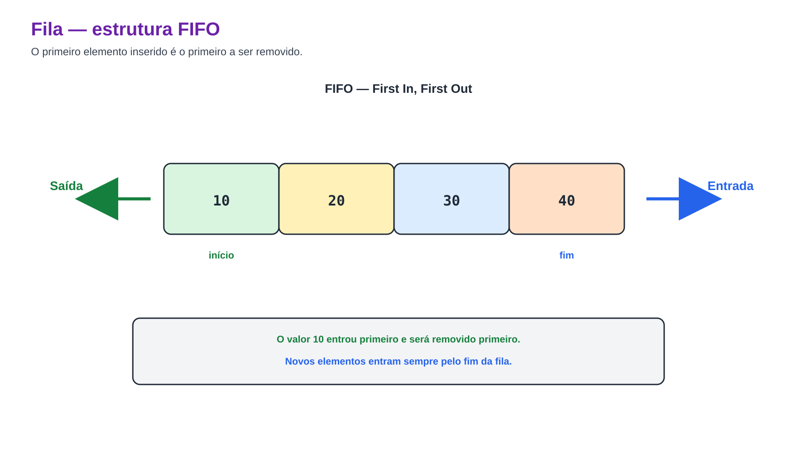
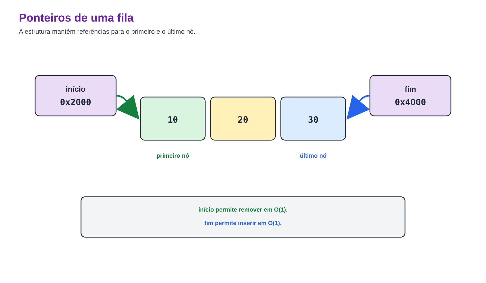
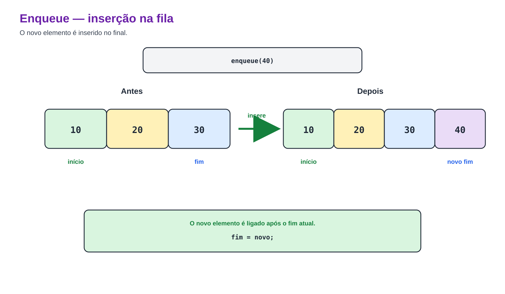
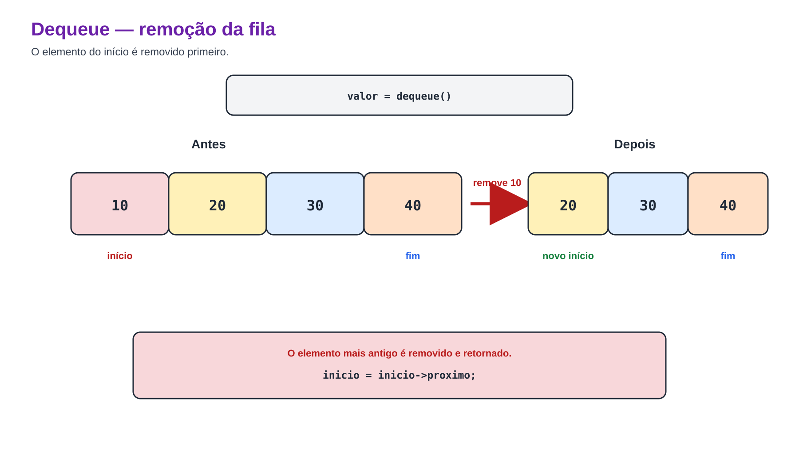
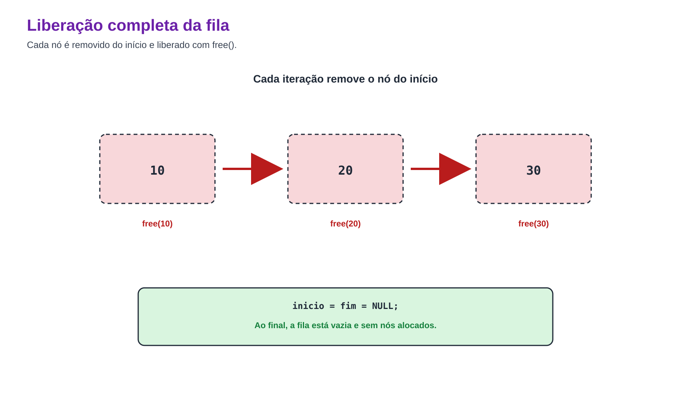

Prof. Me. Gustavo Ferreira Palma

typedef struct No
{
int dado;
struct No *proximo;
} No;inicio: primeiro elemento, que será removido;fim: último elemento, após o qual ocorrerá a inserção.
typedef struct
{
No *inicio;
No *fim;
} Fila;
Fila fila = { .inicio = NULL, .fim = NULL };Quando a fila está vazia, os dois ponteiros são NULL.
NULL.
void enqueue(Fila *fila, int valor)
{
No *novo = malloc(sizeof(No));
if (novo == NULL) return;
novo->dado = valor;
novo->proximo = NULL;
if (fila->inicio == NULL)
fila->inicio = fila->fim = novo;
else
{
fila->fim->proximo = novo;
fila->fim = novo;
}
}NULL.
int dequeue(Fila *fila, int *valor)
{
if (fila->inicio == NULL) return 0;
No *removido = fila->inicio;
if (valor != NULL) *valor = removido->dado;
fila->inicio = removido->proximo;
if (fila->inicio == NULL) fila->fim = NULL;
free(removido);
return 1;
}int front(const Fila *fila, int *valor)
{
if (fila->inicio == NULL) return 0;
if (valor != NULL) *valor = fila->inicio->dado;
return 1;
}int filaVazia(const Fila *fila)
{
return fila->inicio == NULL;
}const No *atual = fila->inicio;
while (atual != NULL)
{
printf("%d ", atual->dado);
atual = atual->proximo;
}
void liberarFila(Fila *fila)
{
while (fila->inicio != NULL)
{
No *temp = fila->inicio;
fila->inicio = fila->inicio->proximo;
free(temp);
}
fila->fim = NULL;
}Podem me encontrar aqui: